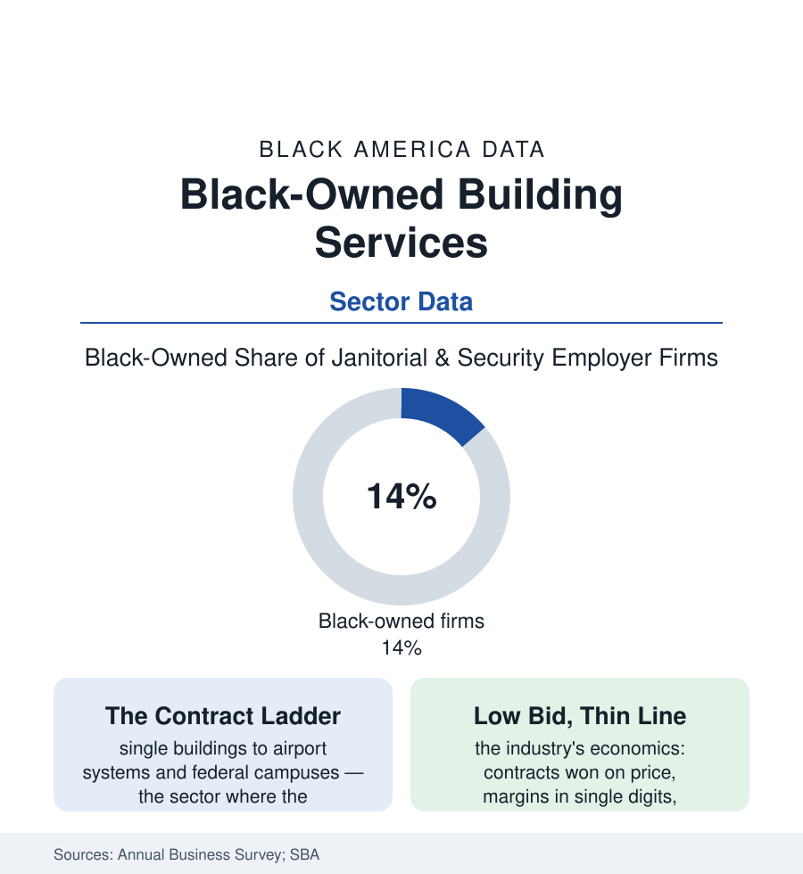

Black Business
Building Services: The Janitorial and Security Empires Nobody Profiles
Cleaning and guarding America's buildings is one of the largest Black business sectors by firm count and contracts — the unglamorous economy that scales. The Census data.

The famous Black businesses sell beauty, food, and sound. The balance-sheet Black businesses, by the Annual Business Survey's industry tables, disproportionately sell cleanliness and watchfulness: janitorial services and security guard firms rank among the largest Black-owned sectors by employer-firm count and contract volume — an economy of mops, keys, and overnight shifts that built some of the largest Black companies in America without a single profile in the magazines that cover the beauty aisle. This article reads the unglamorous file.
The Sector's Shape: Many Doors, One Ladder
The ABS data give the sector its two-tier anatomy: a vast base of small firms (the single-crew cleaning companies and boutique guard agencies of the nonemployer and micro-employer tables — Black ownership shares running above the business economy's average, entry priced at a vacuum, a license, and a bond) and a striking top (the regional and national building-services firms — the sector's Black giants in the contracting and trade-press records employing thousands, holding the airport, hospital, university, and federal-building contracts of whole metropolitan areas). The ladder between tiers is the sector's biography and it is made of contracts: the small firm's first school district, the mid-size firm's first hospital system (the infection-control certifications, the bonded-workforce files), the large firm's first federal campus — each rung a procurement file of the government-contracting article's kind, this sector being the ladder's most-climbed route (the 8(a) program's graduate rolls thick with building-services firms; the set-aside economy's most reliable product being the cleaned and guarded building). The workforce data bridge to the employment file: the sector's firms employ the janitors and guards of the service-workforce tables — the owner and the overnight crew drawn from the same neighborhoods, the firm's payroll a community institution of the domestic-work file's long aftermath.
The sector's history in the Northern city is written in the postwar building boom: the downtown towers and hospital campuses rising on the same blocks the Great Migration filled, the service contracts of the new buildings let to firms whose founders had come up through the buildings themselves — the custodian who learned the plant, priced the contract, and hired the block. The fraternal and church networks of the cities file supplied the first crews and the character references the bonding companies required, and the industry's apprenticeship ran invisibly inside the service elevator for a generation before the ABS tables counted its graduates as owners. It is the domestic-work story's other ending: the same labor, collectivized, contracted, and at the top of the ladder, sold by the square foot to the institutions themselves.
The Economics: Price Is the Product
The industry's numbers are a discipline: contracts bid on price per square foot or per post-hour, gross margins in the single digits in the trade data, labor at four-fifths of cost — an arithmetic that makes scale the only strategy (the purchasing, the insurance pool, the floater crews that cover the call-outs) and the contract's fine print the whole game (the escalation clauses against minimum-wage staircases in the service-contract laws' cities, the supply pass-throughs, the termination-for-convenience clause that can erase a decade's territory in ninety days). The sector's modern chapters write themselves from those numbers: the consolidation wave (the national platforms acquiring the regional firms — the Black giants' exits and successions in the trade record, the founders' second acts as investors and franchisors), the living-wage ordinances as both cost shock and moat (the compliant incumbent's advantage in the regulated city — the policy file's service-sector form), the pandemic's violent whipsaw (the empty offices against the disinfection surge — the enhanced-cleaning contracts' boom and normalization in the revenue data), and the technology margin (the sensor, robot-scrubber, and remote-guard economics entering the bid math — capital questions again, the financing file's door at the loading dock). The sector's quiet institutional fact completes the picture: these firms clean and guard the institutions of every other article in this atlas — the hospitals of the health file, the campuses of the education file, the federal buildings of the contracting file — the infrastructure's infrastructure, twice invisible.
Reading the Building-Services Data
No camera follows the overnight crew, and no magazine ranks the mop contracts — but by firm count, by contract dollars, and by Black payrolls run, building services are one of the largest Black business stories in the Census. The sector's lesson is the business file's recurring one in its plainest clothes: the money in an economy pools where the contracts renew, and the firms that hold the keys — literally, ring by ring — hold a share of the building itself. The survey counts them every year. They were never small. They were just working nights.
More in Black Business
Black-Owned Businesses: Counts, Receipts, and the Representation Gap
About 161,000 Black-owned employer firms and three million solo ventures: how the Census Bureau counts Black business ownership, where firms concentrate, and the gap between population share and business share.
Black Median Net Worth: The Wealth Gap in Federal Reserve Data
The Federal Reserve puts Black median family net worth at $44,900, against $285,000 for White families — about 16 cents on the dollar. The widest gap in economic data.
Black Buying Power: The $1.8 Trillion Consumer Economy
Black buying power is estimated at about $1.8 trillion — larger than the economy of most nations. What the figure measures, who produces it, and what it buys.
Source: U.S. Census Bureau Annual Business Survey (NAICS 5616/5617); U.S. Small Business Administration contracting data; industry association records.